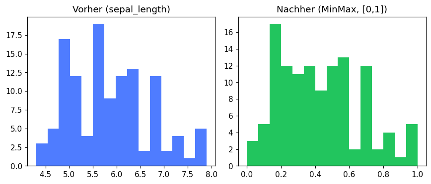
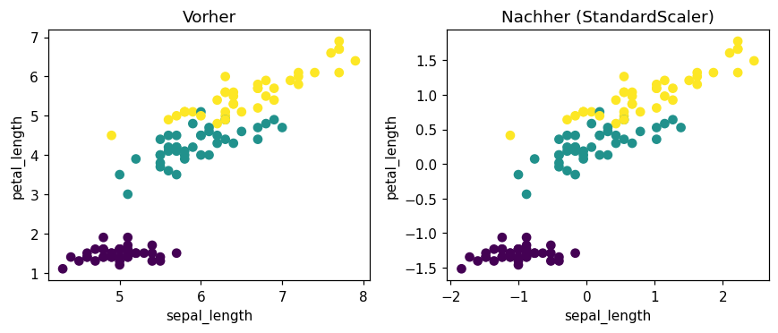

Selbst programmieren
Lies die Aufgabenstellung und vergleiche dein Ziel mit der „Erwarteten Ausgabe“.
Schreibe deine Lösung dann selbst im freien Code-Bereich,
der per Klick auf „▶ Code ausführen“ echtes Python (Pyodide, inkl. numpy/pandas/scikit-learn)
im Browser ausführt. Erst danach die Musterlösung aufklappen.
Alle Aufgaben arbeiten mit dem iris-Datensatz (150 Samples, 4 Features, 3 Klassen).
✂️ Stratifizierter Train-Test-Split
LeichtLade den iris-Datensatz und teile ihn in Training (80%) und Test (20%) auf.
- Nutze
train_test_splitmitstratify=yundrandom_state=42. - Gib die Shapes von
X_trainundX_testaus. - Gib die Klassenverteilung (mit
np.bincount) in Train und Test aus — prüfe, dassstratifywirkt.
Train: (120, 4) Test: (30, 4) Klassenverteilung Train: [40 40 40] Klassenverteilung Test: [10 10 10]
💡 Musterlösung anzeigen
stratify=y sorgt dafür, dass alle drei Klassen (je 50 Samples) im selben Verhältnis
wie im Originaldatensatz auf Train/Test verteilt werden — hier exakt 40/40/40 und 10/10/10.
import numpy as np
from sklearn.datasets import load_iris
from sklearn.model_selection import train_test_split
X, y = load_iris(return_X_y=True)
X_train, X_test, y_train, y_test = train_test_split(
X, y, test_size=0.2, stratify=y, random_state=42
)
print("Train:", X_train.shape, "Test:", X_test.shape)
print("Klassenverteilung Train:", np.bincount(y_train))
print("Klassenverteilung Test:", np.bincount(y_test))Train: (120, 4) Test: (30, 4) Klassenverteilung Train: [40 40 40] Klassenverteilung Test: [10 10 10]
📏 MinMax-Skalierung von Scratch
MittelImplementiere die MinMax-Formel x' = (x - x_min) / (x_max - x_min) selbst und vergleiche mit MinMaxScaler.
- Berechne
x_minundx_maxaus Feature 0 (sepal length) vonX_train. - Skaliere die ersten 5 Werte von Feature 0 manuell.
- Fitte einen
MinMaxScaleraufX_trainund vergleiche die ersten 5 skalierten Werte von Feature 0.
manual[:5]: [0.028 0.167 0.694 0.167 0.333] sklearn[:5,0]: [0.028 0.167 0.694 0.167 0.333]
💡 Musterlösung anzeigen
Die manuelle MinMax-Formel und MinMaxScaler liefern identische Werte —
der Scaler macht intern nichts anderes. Wichtig: x_min/x_max kommen
aus X_train, nicht aus dem gesamten Datensatz (sonst Data Leakage).
from sklearn.preprocessing import MinMaxScaler
feature = X_train[:, 0]
x_min, x_max = feature.min(), feature.max()
scaled_manual = (feature - x_min) / (x_max - x_min)
print("manual[:5]:", np.round(scaled_manual[:5], 3))
scaler = MinMaxScaler().fit(X_train)
scaled_sklearn = scaler.transform(X_train)
print("sklearn[:5,0]:", np.round(scaled_sklearn[:5, 0], 3))manual[:5]: [0.028 0.167 0.694 0.167 0.333] sklearn[:5,0]: [0.028 0.167 0.694 0.167 0.333]
Ein Histogramm zeigt den Effekt der Skalierung sofort: die Form der Verteilung
bleibt identisch, aber die x-Achse wird von ihrem ursprünglichen Wertebereich
(z.B. ~4.3 bis ~7.9 cm) auf exakt [0, 1] komprimiert. MinMax-Skalierung verzerrt
also nicht die Datenstruktur, sondern verschiebt und streckt nur die Skala.
import matplotlib.pyplot as plt
fig, axes = plt.subplots(1, 2, figsize=(8, 3.5))
axes[0].hist(X_train[:, 0], bins=15, color='#4f7cff')
axes[0].set_title("Vorher (sepal_length)")
axes[1].hist(scaled_sklearn[:, 0], bins=15, color='#22c55e')
axes[1].set_title("Nachher (MinMax, [0,1])")
plt.show()
🔢 One-Hot-Encoding & Dummy-Trap
MittelEncode eine kategoriale Spalte farbe mit OneHotEncoder — und vermeide die Dummy-Variable-Trap.
- Erstelle einen DataFrame mit der Spalte
farbe = ['rot','blau','gruen','blau','rot']. - Fitte einen
OneHotEncodermitdrop='first'undsparse_output=False. - Gib
categories_, das transformierte Array undget_feature_names_out()aus.
Kategorien: [array(['blau', 'gruen', 'rot'], dtype=object)] Encoded: [[0. 1.] [0. 0.] [1. 0.] [0. 0.] [0. 1.]] Feature names: ['farbe_gruen' 'farbe_rot']
💡 Musterlösung anzeigen
drop='first' entfernt die erste Kategorie (alphabetisch blau) — sie wird
durch [0, 0] in den verbleibenden Spalten repräsentiert. Das vermeidet die
Multikollinearität (Dummy-Variable-Trap), da die letzte Kategorie sonst immer aus
den anderen ableitbar wäre.
import pandas as pd
from sklearn.preprocessing import OneHotEncoder
df = pd.DataFrame({'farbe': ['rot', 'blau', 'gruen', 'blau', 'rot']})
ohe = OneHotEncoder(sparse_output=False, drop='first')
encoded = ohe.fit_transform(df[['farbe']])
print("Kategorien:", ohe.categories_)
print("Encoded:\n", encoded)
print("Feature names:", ohe.get_feature_names_out())Kategorien: [array(['blau', 'gruen', 'rot'], dtype=object)] Encoded: [[0. 1.] [0. 0.] [1. 0.] [0. 0.] [0. 1.]] Feature names: ['farbe_gruen' 'farbe_rot']
⚖️ Leakage-freie Pipeline mit Scaling
MittelBaue eine Pipeline aus StandardScaler + KNeighborsClassifier (k=5), die korrekt nur auf Trainingsdaten gefittet wird.
- Erstelle eine
Pipelinemit den Schritten'scaler'(StandardScaler) und'knn'(KNeighborsClassifier,n_neighbors=5). - Fitte die Pipeline mit
pipe.fit(X_train, y_train)— nichtX_testanfassen! - Berechne die Test-Accuracy mit
pipe.score(X_test, y_test).
Test-Accuracy: 0.933
💡 Musterlösung anzeigen
Die Pipeline ruft beim fit automatisch scaler.fit_transform(X_train) und
dann knn.fit(...) auf. Bei pipe.score(X_test, y_test) wird auf den Scaler
nur transform angewendet (mit den aus X_train gelernten μ/σ) —
Data Leakage ist strukturell ausgeschlossen.
from sklearn.pipeline import Pipeline
from sklearn.preprocessing import StandardScaler
from sklearn.neighbors import KNeighborsClassifier
pipe = Pipeline([
('scaler', StandardScaler()),
('knn', KNeighborsClassifier(n_neighbors=5)),
])
pipe.fit(X_train, y_train)
print("Test-Accuracy:", round(pipe.score(X_test, y_test), 3))Test-Accuracy: 0.933
🔍 Feature Selection mit SelectKBest
SchwerFinde die 2 informativsten Features von iris mit SelectKBest und f_classif.
- Erstelle
SelectKBest(score_func=f_classif, k=2)und fitte ihn aufX_train, y_train. - Gib die F-Werte (
scores_) aller 4 Features aus (gerundet auf 2 Nachkommastellen). - Gib die Indizes und Namen der ausgewählten Features aus. Feature-Namen:
['sepal_length','sepal_width','petal_length','petal_width'].
Scores: [100.97 36.03 948.89 803.21] Ausgewählte Feature-Indizes: [2 3] Ausgewählte Features: ['petal_length', 'petal_width']
💡 Musterlösung anzeigen
f_classif berechnet pro Feature den ANOVA-F-Wert — wie stark unterscheidet das Feature
zwischen den 3 Klassen? petal_length (948.89) und petal_width (803.21)
haben die höchsten Werte und trennen die Iris-Arten am besten; sepal_width (36.03)
ist am wenigsten informativ.
from sklearn.feature_selection import SelectKBest, f_classif
feature_names = ['sepal_length', 'sepal_width', 'petal_length', 'petal_width']
selector = SelectKBest(score_func=f_classif, k=2)
X_new = selector.fit_transform(X_train, y_train)
print("Scores:", np.round(selector.scores_, 2))
selected_idx = selector.get_support(indices=True)
print("Ausgewählte Feature-Indizes:", selected_idx)
print("Ausgewählte Features:", [feature_names[i] for i in selected_idx])Scores: [100.97 36.03 948.89 803.21] Ausgewählte Feature-Indizes: [2 3] Ausgewählte Features: ['petal_length', 'petal_width']
📊 Skalierung visualisieren: Scatterplot vorher/nachher
MittelVisualisiere den Effekt von StandardScaler auf einen Scatterplot der Features sepal_length und petal_length.
- Fitte
StandardScaleraufX_trainund transformiereX_trainzuXs_train. - Erstelle zwei Subplots (
plt.subplots(1, 2, ...)): links ein Scatterplot vonX_train[:,0]gegenX_train[:,2](vorher), rechtsXs_train[:,0]gegenXs_train[:,2](nachher). - Färbe die Punkte in beiden Plots nach
y_train(c=y_train, cmap='viridis') und beschrifte die Achsen.
Zwei nebeneinander liegende Scatterplots mit identischer Punktanordnung: links im Originalbereich (sepal_length ~4.3-7.9, petal_length ~1-6.9), rechts zentriert um (0,0) mit Standardabweichung 1.

💡 Musterlösung anzeigen
Die Form der Punktwolke (und damit auch die Beziehung zwischen den Klassen,
gefärbt nach y_train) bleibt nach dem Skalieren exakt gleich — StandardScaler
verschiebt und streckt nur die Achsen, sodass beide Features anschließend μ=0 und σ=1 haben.
Das ist wichtig für Modelle wie KNN oder SVM, die auf Abständen basieren: ohne Skalierung würde
ein Feature mit großem Wertebereich (z.B. sepal_length in cm) ein Feature mit
kleinem Wertebereich dominieren.
from sklearn.preprocessing import StandardScaler
import matplotlib.pyplot as plt
scaler = StandardScaler().fit(X_train)
Xs_train = scaler.transform(X_train)
fig, axes = plt.subplots(1, 2, figsize=(8, 3.5))
axes[0].scatter(X_train[:, 0], X_train[:, 2], c=y_train, cmap='viridis')
axes[0].set_title("Vorher")
axes[0].set_xlabel("sepal_length"); axes[0].set_ylabel("petal_length")
axes[1].scatter(Xs_train[:, 0], Xs_train[:, 2], c=y_train, cmap='viridis')
axes[1].set_title("Nachher (StandardScaler)")
axes[1].set_xlabel("sepal_length"); axes[1].set_ylabel("petal_length")
plt.show()